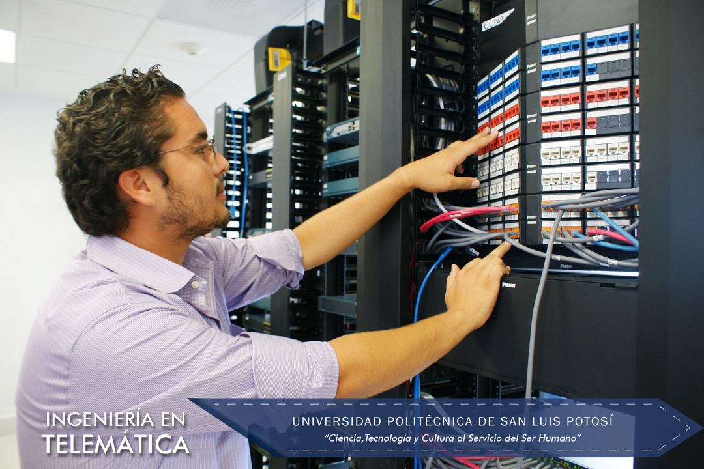

La Academia de ATIT cuenta con las carreas de:
El Ingeniero en Tecnologías de la Información
aplica sus sólidos conocimientos al diseño, desarrollo e instrumentación de soluciones informáticas que requieren las organizaciones, atendiendo las necesidades humanas derivadas de la interacción con la computadora. Es competente para mantener equipos de cómputo operando eficientemente y ofrece al usuario soluciones integrales a los problemas
asociados con el área computacional.
Los Objetivos del Plan de Estudios de la Ingeniería en Tecnologías de la Información que ofrece la Universidad Politécnica de San Luis Potosí enfatizan siete aspectos importantes en la formación del Ingeniero, que le confieren una sólida preparación para desempeñarse
exitosamente en el mundo laboral.
Los objetivos del Plan de Estudios enfatizan 7 aspectos en la formacion del ingeniero para desempeñarse exitosamente en el mundo laboral:
Otra carrera perteneciente a la academia ATIT es:

En la carrera de Ingeniería en Telemática, se prepara a los estudiantes en tres grandes áreas del conocimiento que conforman la carrera y las cuales son:
a) Las redes de telecomunicaciones, en dicha área del conocimiento se incluyen los temas que tienen que ver con los sistemas de telecomunicaciones de la actualidad,
como lo son las redes de área local, las redes de cobertura amplía, las redes convergentes de voz, datos y video, las redes de telefonía celular, los sistemas de microondas
terrestres y vía satélite, así como los estándares para instalar la infraestructura de cableado estructurado.
b) Las tecnologías de la información, que es el conjunto de aplicaciones basadas en software y equipos informáticos que hacen uso de las redes de telecomunicaciones para la
transmisión y ejecución de las mismas; entre un sinnúmero de aplicaciones encontramos: la programación web, el diseño de bases de datos y de conocimientos, aplicaciones de voz y video, programación para dispositivos móviles y para el posicionamiento de
vehículos.
c) Los sistemas embebidos, es un área del conocimiento en constante desarrollo industrial y se refiere a sistemas electrónicos que incluyen una micro-computadora, entradas y salidas estándares,
conectividad y software. Esta micro-computadora puede adaptarse a casi cualquier tipo
de aplicación, siendo su principal ventaja la movilidad y la conectividad; haciendo realidad el concepto de internet de las cosas. Los sistemas embebidos pueden obtener, procesar, transmitir y
recibir información de diferentes fuentes incluyendo sensores y dispositivos típicos de entrada/salida. Las aplicaciones en este sector son ilimitadas, por ejemplo, el sector automotriz, los servicios de salud, la automatización de líneas de producción, diversión, comercio,
ciudades inteligentes y educación.
Los Objetivos del Plan de Estudios de la Ingeniería en Telemática que ofrece la Universidad Politécnica de San Luis Potosí, enfatizan cinco aspectos importantes en la formación del Ingeniero, que le confieren una sólida preparación para desempeñarse exitosamente en el mundo laboral: